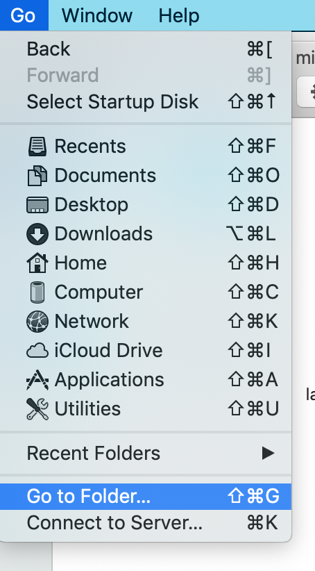
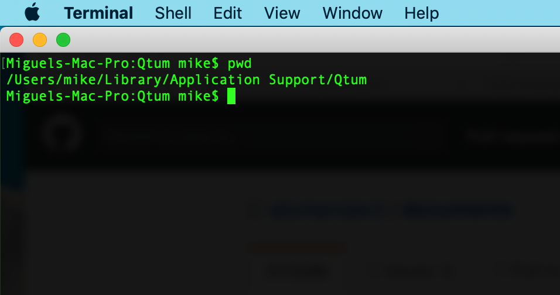
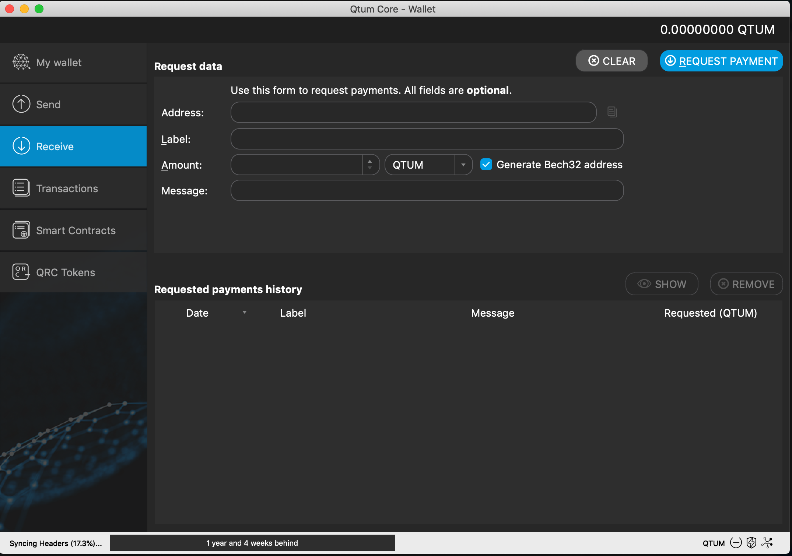
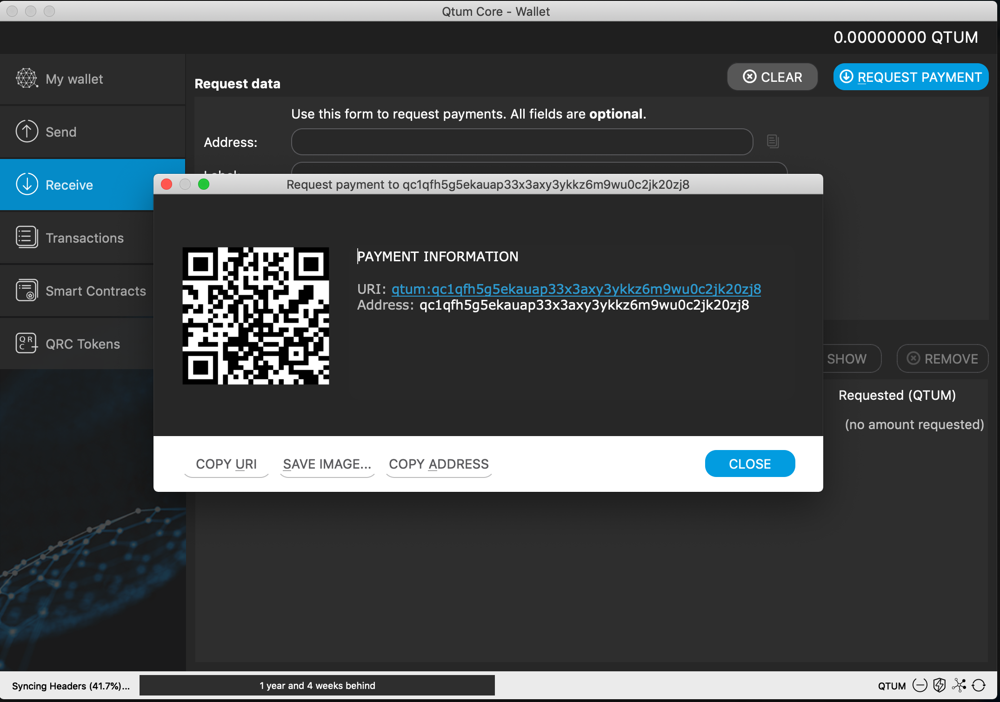

bech32 addresses on Qtum 0.16.1
IMPORTANT NOTE: bech32 addresses CANNOT participate in staking. They're only for transacting and storing Qtum.
Qtum 0.16 brought several important updates, one of the most important is in fact the support for bech32 addresses. These can be enabled on new wallets by adding addresstype=bech32 to the qtum.conf file
PLEASE NOTE bech32 is very new and most online services don't support it yet, this means you cannot withdraw from most exchanges/online wallets to a bech32 address for now, as time passes and there's more support for bech32, it'll be easy to use from/to any service.
There's many advantages to this new format, it's the future in many ways as even lightning network will benefit from this, bech32 addresses on Qtum start with qc1. To learn more about bech32:
https://github.com/bitcoin/bips/blob/master/bip-0173.mediawiki
https://www.coindesk.com/pieter-wuilles-latest-project-making-bitcoin-harder-lose/
Let's see how to enable these addresses on Qtum 0.16.1:
Following our sample, in Mac OS, we need to go to the folder /Users/yourusername/Library/Application Support/Qtum (If it doesn't exist, you need to create it)
There's two options for navigating ourselves towards that folder, the first one is by opening Finder and going to the menu: go -> go to folder.. > ~/Library/Application Support/Qtum


Optionally, we can use the Mac OS terminal if you're more comfortable with it

Once inside that folder, we need to create the qtum.conf file (from a text editor or command line) and add
addresstype=bech32 to it, save and close the file.

Next, we launch the Qtum wallet, we'll be able to create and use bech32 addresses now. Just go to the "receive" menu and create a new payment request
Sending and receiving is pretty much the same as before, just copy and paste the address on the send field to send some Qtum to a bech32 address, or do the same for receiving.
Other Operating systems:
Windows:
Navigate to %Appdata%/ and you'll find the Qtum folder
Linux/FreeBSD:
Your home folder contains the Qtum folder, by default it's in this location ~/.qtum/